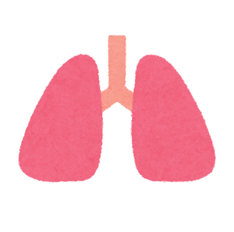

肺
- 肺は胸腔内の左右に一個ずつ存在する
- 呼吸によって空気中の酸素を取り込み二酸化炭素を排出する器官
- 成人の肺の総評面積は約70～100㎡（テニスコート一面分）とされている
- 胸骨・肋骨に囲まれており心臓と隣接している
- 肺葉：右肺は3葉、左肺は2葉に分かれている
- 肺区域：各葉はさらに区域に分割される
- 肺を包む膜：肺を覆う臓側胸膜と胸壁内面を覆う壁側胸膜が存在する
- 気道は気管→主気管支→小気管支→細気管支と進む
- 終末細気管支では肺胞が集まりガス交換を行っている
1(脳)
3(心臓)
4(胃)
5(小腸)
6(大腸)
top